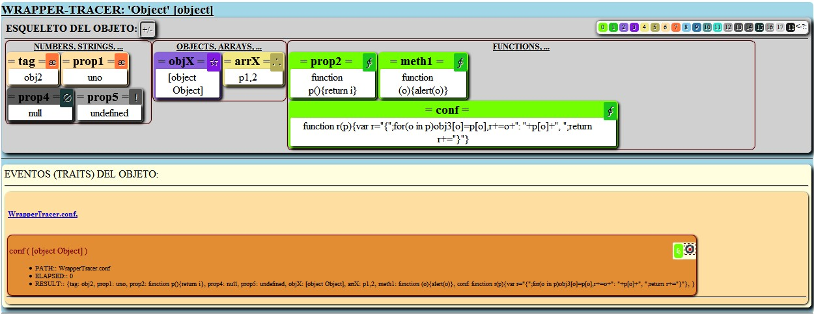

Es una clase Javascript que crea objetos ENVOLVENTES (wrappers) para permitir el rastreo (tracer) de los métodos ejecutados.
Se encarga de analizar cualquier objeto JS mostrando su esqueleto para hacernos una idea gráfica de cómo es su mapa interno de métodos y propiedades. También captura sus métodos inyectándoles un seguimiento para rastrear su ciclo de ejecución.WrapperTracer v1.0.0
copyright @ 2015 - Juan José Guerra Haba <dinertron@gmail.com>License: Free. GPL.v3
Tutorial WrapperTracer
Introducción:
Esta clase analiza la estructura interna de cualquier objeto JS mostrando un mapa gráfico de su esqueleto, para poder, de un simple vistazo, estudiar su anatomía interna.
Representa de forma visual todas sus propiedades agrupándolas según su tipo. De esta forma podemos apreciar rápidamente cuántas propiedades booleanas, tipo string, number, etc... posee, al igual que los objetos y arrays que contiene. También podemos visualizar sus métodos o funciones y diferenciar si son propiedades propias (OWN) o heredables (a través de su prototipo).
Para representar cualquier propiedad éstas deben encontrarse asignadas (aunque sea a undefined), de lo contrario no se representarán.
Una vez capturado el objeto (wrappeado) en su envoltorio, podemos ejecutar sus métodos, quedando un registro recursivo de su ruta de ejecución, con algunos datos interesantes como el tiempo empleado en cada método o la ruta que ha seguido.
Podría resultar muy útil como herramienta para desarrolladores y programadores de código 'javascript', al mostrar de un vistazo la estructura interna de cualquier objeto 'javascript', incluso de un superobjeto como 'window'.
Con un poco de imaginación podría emplearse como herramienta de comparación de objetos similares, o de diferentes versiones.
Cargar y Utilizar el Script:
Por supuesto el primer paso empieza por cargar el script en la zona Head de la página, por ejemplo:
<script type="text/javascript" src="WrapperTracer.js"> </script>
Una vez cargado, el script crea una Clase GLOBAL WrapperTracer con la que podremos crear objetos <<wrappeadores>>. Su constructor admite hasta tres parámetros:
- Objeto javascript: Cualquier objeto, función o librería javascript.
- Elemento contenedor: Una cadena representando el atributo 'id' de cualquier elemento del DOM, o bién el propio elemento HTMLElement.
- Función callback [OPCIONAL]: Una función a modo de callback que será inyectada en todos los métodos del objeto.
Podemos escribir código (en una etiqueta <script>) para crear el constructor y capturar un objeto cualquiera, WrapperTracer ya se encarga de construir la interfaz gráfica mostrándonos información:
//la propiedad 'id' se corresponderá con el id de algún elemento contenedor donde ubicar toda la UI
//Creamos el 'envoltorio':
var wrapper = new WrapperTracer( window, "idContenedor" );
//ahora creamos el objeto 'envuelto':
var wrapped = wrapper.getWrapped( );
//ahora la variable 'wrapper' hace referencia al objeto 'envoltorio' y la variable 'wrapped' se refiere al objeto 'envuelto'
...
Observaciones:
El constructor de la clase genera toda la UI
El método getWrapped() solo nos sería de utilidad si necesitamos rastrear los métodos ejecutados.
Aunque se ha realizado un esfuerzo para que la librería sea cross-browser, puede observarse alguna diferencia dependiendo del navegador utilizado, sobre todo "IE".
GUI:
La interfaz gráfica se autoconstruye y se embebe en el elemento con el 'id' pasado como parámetro. Todo el código que necesita (javascript, css, html) se encuentra definido en el propio script 'WrapperTracer.js', éste se encarga de mostrar dos zonas diferenciadas, el Esqueleto y las Trazas:
La zona del esqueleto puede ocultarse mediante el botón
Todas las propiedades están agrupadas por su tipo y se muestran con signos y mediante un código de pares de colores para diferenciar las que son propias (OWN) de las heredadas (INHERITED); con "heredadas" quiero decir que <<deriven de su prototipo>>.
En la zona de Rasgos o Trazas (TRAITS) se representan los métodos ejecutados en unos bloques anidados que muestran alguna información como los parámetros, el tiempo empleado en ejecutar el método (ELAPSED) o el resultado (RESULT), si es que retorna algo.
COLOFÓN:
WrapperTracer se ha pensado como herramienta para desarrolladores y programadores de código 'javascript', puede resultar útil entender la estructura interna de cualquier objeto 'javascript', incluso de un superobjeto como 'window', también podría utilizarse para comparar distintas versiones de scripts y sus diferencias estructurales, o como comprobación de rendimientos utilizando la medición de los diferentes tiempos de ejecución de cada método.
Animo a todos los usuarios (programadores/desarrolladores) a utilizar este script que seguro puede ser útil. Para empezar se puede experimentar con los ejemplos propuestos para ir familiarizandose con ella.